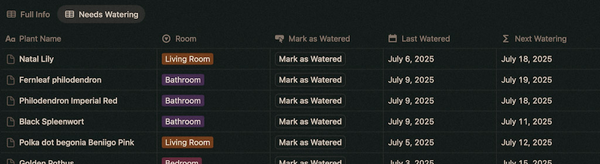
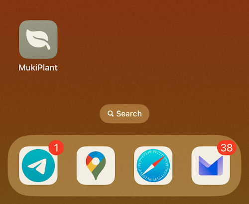

I love plants. Despite having a house full of them, I am not a plant collector or a green thumb. I've killed so many plants that I could probably populate a small greenhouse with their ghost leaves.
Over the years I tried different approaches, including letting plants adapt to their environment (aka my house and spotty care). This approach didn't kill most of them, but it didn't help them thrive either.
And that's what brings me the most joy: learning the details that make them thrive. Consistent watering, different lights or soil, spotting new growth, seeing their leaves change.
The simple starting point for me was regular and consistent watering, prompted by a weird schedule when I went on vacation that almost killed lots of them. So about a year ago, I downloaded an app to help me with this. I enjoyed watering my plants in batches and having a to-do list, who doesn't like crossing things off?
But I noticed the same plants were still not thriving. The automatic plant care didn't match what I observed, and even though everything was customizable, it wasn't easy to track what I was actually doing with my plants.
The app was made for automation, not for learning and improving plant care.
As a product designer, I understand the goal of reducing cognitive load. But when we over-simplify tools, we remove users from the center of their own experience by removing the details that matter – the thinking time we need to discover what actually works for us.
For me, the goal isn't just watering plants. It's getting to know each plant and learning from that process.
The original promise of technology wasn't to think for us, it used to be a tool instead of an end in itself. No-code returns to that, I can build a tool that preserves the complexity I actually want, choosing the details that are relevant to my experience and adapting as my experience evolves.
Being someone that enjoys solving these problems and building projects I built my own plant care tracker using Notion. Version 1.0 includes the most basic components to track when I need to water each plant.
This is the MVP I needed to be able to uninstall the previous app (and cancel the subscription)

Next I'll add more watering functionality, and track different events, like repotting, fertilizing, and experiments. I'll continue to publish and share all these versions.
I sincerely hope the building spark catches you too and you create something that works for you. If you do, I'd love to hear about it.
And if you're in Berlin, we can do some plant swapping ;)
Continue reading this post to learn the details about v1.0 →
Check v1.0 in Notion → You can duplicate it and use it as your starting point.